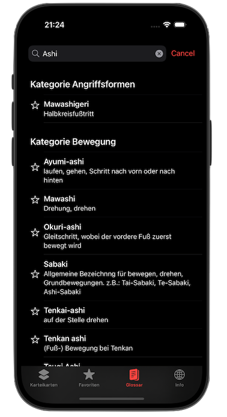
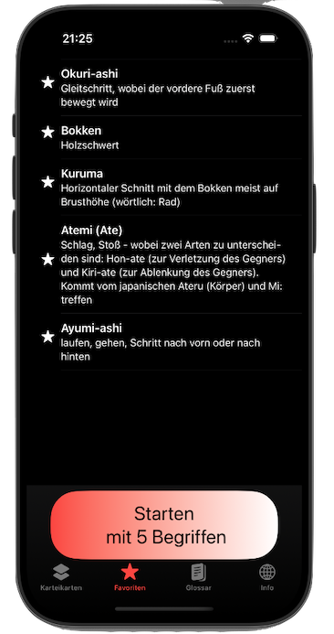

Willkommen
Entdecke die Aikidō Aibō App – Dein Partner für Aikidō-Wissen! Aikido Union Linz (externer Link!) Aikido in Frankfurt (externer Link!)
"Aibō" = Partner/Gefährte
Die Aikidō Aibō App unterstützt Dich beim Lernen japanischer Begriffe aus der faszinierenden Welt des Aikidō. Mit über 500 Einträgen, einer praktischen Karteikartenfunktion und einem Glossar mit Suchfunktion hast Du alles, was Du brauchst, um Dein Wissen zu vertiefen – kostenlos und für die Gemeinschaft der Aikidōka entwickelt.
Markiere Favoriten, übe gezielt und entdecke bald weitere spannende Inhalte und Funktionen. Starte jetzt Deinen Weg mit Aikidō Aibō – Deinem treuen Begleiter in der Kampfkunst!
Die Inhalte der App (Begriffe und Übersetzungen) wurden zur Verfügung gestellt von:
Dr. Sascha Heller
DOWNLOAD Aikidō Aibō für iOS (externer Link!)
 
Datenschutzrichtlinie
Vielen Dank für Ihr Interesse an der "Aikidō Aibō" App. Ich lege großen Wert auf den Schutz Ihrer Privatsphäre und möchten Ihnen mitteilen, dass die "Aikidō Aibō" App keinerlei personenbezogene Daten sammelt oder verarbeitet. Ihre Daten bleiben also vollständig geschützt. Im Folgenden finden Sie die Datenschutzrichtlinie, die meine Verpflichtungen in Bezug auf den Schutz Ihrer Privatsphäre erläutert:
- Datenerfassung: Die App erfasst keine personenbezogenen Daten von Ihnen. Ich sammeln weder Ihren Namen, Ihre E-Mail-Adresse, Ihre Telefonnummer noch andere Informationen, die Rückschlüsse auf Ihre Identität zulassen.
- Standortdaten: Die App verwendet keine Standortdienste auf Ihrem Gerät. Daher erfasse ich keine Informationen über Ihren Aufenthaltsort.
- Nutzungsdaten: Ich erfasse keine Daten über Ihre Nutzung der App, einschließlich Ihrer Klicks, Interaktionen oder anderer Aktivitäten.
- Keine Weitergabe an Dritte: Da ich keine personenbezogenen Daten sammeln, verarbeiten oder speichern, gebe ich auch keine Daten an Dritte weiter. Ihre Privatsphäre bleibt geschützt.
- Cookies und Tracking: Die App verwendet keine Cookies oder Tracking-Technologien. Ich verfolge Ihr Nutzungsverhalten nicht und setzen keine Technologien ein, um Ihre Aktivitäten zu analysieren.
- Externe Dienste: Die App greift nicht auf externe Dienste oder APIs zu, die möglicherweise personenbezogene Daten sammeln oder verarbeiten könnten.
- Kindersicherheit: Die App richtet sich nicht an Kinder unter 13 Jahren, und ich sammle wissentlich keine personenbezogenen Daten von Kindern.
- Datensicherheit: Da ich keine personenbezogenen Daten sammeln, verarbeiten oder speichern, gibt es nichts zu schützen.
- Bitte beachten Sie, dass diese Datenschutzrichtlinie ausschließlich für die "Aikidō Aibō" App gilt. Wenn Sie auf Links zu anderen Websites oder Apps von Drittanbietern zugreifen, gelten deren Datenschutzrichtlinien und -praktiken möglicherweise nicht für die App. Ich empfehle Ihnen, die Datenschutzrichtlinien der jeweiligen Drittanbieter zu lesen, um zu verstehen, wie Ihre Daten von ihnen verwendet werden.
- Wenn Sie Fragen oder Bedenken zu der Datenschutzrichtlinie haben, können Sie mich gerne kontaktieren. Vielen Dank für Ihr Vertrauen und Ihre Unterstützung bei der Wahrung Ihrer Privatsphäre.
Haftungsausschluss
Die in der Aikidō Aibō App bereitgestellten Übersetzungen von Begriffen und Konzepten im Zusammenhang mit der Kampfkunst Aikidō dienen ausschließlich zu Informationszwecken.
Wir bemühen uns, korrekte und präzise Übersetzungen zwischen Deutsch und Japanisch anzubieten, übernehmen jedoch keine Gewähr für die Richtigkeit, Vollständigkeit oder Aktualität der Inhalte.
Die Verwendung der App erfolgt auf eigene Verantwortung des Nutzers. Der Entwickler der App haftet nicht für direkte oder indirekte Schäden, die durch die Nutzung der Übersetzungen oder der bereitgestellten Informationen entstehen könnten, einschließlich, aber nicht beschränkt auf Missverständnisse in der Anwendung von Techniken oder Anweisungen im Aikidō-Training.
Bitte konsultieren Sie im Zweifelsfall einen qualifizierten Aikidō-Lehrer oder eine andere Fachperson, um sicherzustellen, dass die Techniken und Begriffe korrekt verstanden und angewendet werden. Die App ersetzt nicht den direkten Unterricht durch einen erfahrenen Aikidō-Meister.
Mit der Nutzung dieser App stimmen Sie diesen Bedingungen zu.